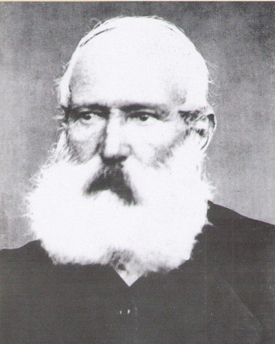

Istorija korišćenja vrnjačkih mineralnih voda seže u duboku prošlost, u vreme kada su ove prostore
naseljavali keltski Skordisci. Posle rimskog osvajanja Balkana u poslednjim vekovima stare ere i nekoliko
vekova nove ere mineralne vode su korišćene za piće i kupanje, o čemu svedoči pronađeni rimski izvor
prilikom kaptaže vrnjačke tople mineralne vode 1924. godine i mnoštvo novčića sa likovima rimskih imperatora.
Ipak istorija moderne banje u Vrnjcima vezuje se za 1868. godinu, kada je kruševački okružni
načelnik Pavle Mutavdžic sa nekolicinom dobrotvora i viđenijih ljudi iz Kruševca, Karavnovca (Kraljeva)
i Trstenika formirali Osnovatelno fundatorsko društvo kiselo-vruće vode u Vrnjcima.
Iste godine izvršena je kaptaža dva izvora tople mineralne vode i počelo se sa izgradnjom banjskih objekata, pre svega kupatila.

Prva sezona naredne 1869. godine potvrdila je opravdanost osnivanja jednog takvog udruženja i perspektivu nove banje.
Posle nekoliko godina stagnacije zbog nedostatka sredstava za izgradnju lečilišta, a pomalo i nebrige države,
osamdesetih godina, kada banja u Vrnjcima prelazi u državne ruke, a naročito posle izgradnje vile generala Jovana Belimarkovića,
namesnika kralju Aleksandru Obrenoviću, Vrnjačka Banja počinje da se razvija u moderno lečilište.